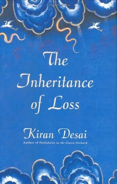

My Books

Name: The God of Smallthings
Author: Arundathi Roy
Pages: 356
The God of Small Things is a family drama novel written by Indian writer Arundhati Roy. It's Roy's debut
novel. It is a story about the childhood experiences of fraternal twins whose lives are destroyed by the
"Love Laws" that lay down "who should be loved, and how. And how much."

Name: The White Tiger
Author: Aravind Adiga
Pages: 256
The White Tiger is a novel by Indian author Aravind Adiga. It was published in 2008 and won the 40th Man
Booker Prize the same year.The novel provides a darkly humorous perspective of India's class struggle in a
globalized world as told through a retrospective narration from Balram Halwai, a village boy.

Name: Inheritance of Loss
Author: Kiran Desai
Pages: 234
The Inheritance of Loss is the second novel by Indian author Kiran Desai. It was first published in 2006. It
won a number of awards, including the Man Booker Prize for that year, the National Book Critics Circle
Fiction Award in 2007.The novel has been well-received, making the New York Times bestseller list in
addition to winning the Man Booker Prize.

Name: A Suitable Boy
Author: Vikram Seth
Pages: 345
A Suitable Boy is a novel by Vikram Seth, published in 1993. With 1,349 pages (1,488 pages in paperback), the
English–language book is one of the longest novels published in a single volume.